Warning: package 'tidyverse' was built under R version 4.3.3
Warning: package 'ggplot2' was built under R version 4.3.3
── Attaching core tidyverse packages ──────────────────────── tidyverse 2.0.0 ──
✔ dplyr 1.1.4 ✔ readr 2.1.5
✔ forcats 1.0.0 ✔ stringr 1.5.1
✔ ggplot2 3.5.1 ✔ tibble 3.2.1
✔ lubridate 1.9.3 ✔ tidyr 1.3.1
✔ purrr 1.0.2
── Conflicts ────────────────────────────────────────── tidyverse_conflicts() ──
✖ dplyr::filter() masks stats::filter()
✖ dplyr::lag() masks stats::lag()
ℹ Use the conflicted package (<http://conflicted.r-lib.org/>) to force all conflicts to become errors
library(lubridate)library(data.table)
Attaching package: 'data.table'
The following objects are masked from 'package:lubridate':
hour, isoweek, mday, minute, month, quarter, second, wday, week,
yday, year
The following objects are masked from 'package:dplyr':
between, first, last
The following object is masked from 'package:purrr':
transpose
[1] "Aggregated date range: 2021-08-01 to 2023-07-31"
if (is.finite(start_date) &is.finite(end_date)) {# 填补缺失值 df_daily <- df_daily %>%complete(`Document Date`=seq.Date(start_date, end_date, by ="day")) %>%fill(Net_Price, .direction ="downup")} else {stop("Invalid date range detected. Please check your data.")}# 绘制基础时间序列图ggplot(df_daily, aes(x =`Document Date`, y = Net_Price)) +geom_line() +labs(title ="Daily Net Price Over Time", x ="Date", y ="Net Price") +theme_minimal()
# 绘制分析结果ggplot(results_df, aes(x = Increase_in_Sales, y = Count, fill = Increase_in_Sales)) +geom_bar(stat ="identity") +labs(title ="Sales Increase Analysis", x ="Increase in Sales", y ="Count") +theme_minimal()
`summarise()` has grouped output by 'Document Date'. You can override using the
`.groups` argument.
# 绘制整体时间序列图ggplot(df_daily, aes(x =`Document Date`, y = Net_Price)) +geom_line() +labs(title ="Daily Net Price Over Time",x ="Date", y ="Net Price") +theme_minimal()
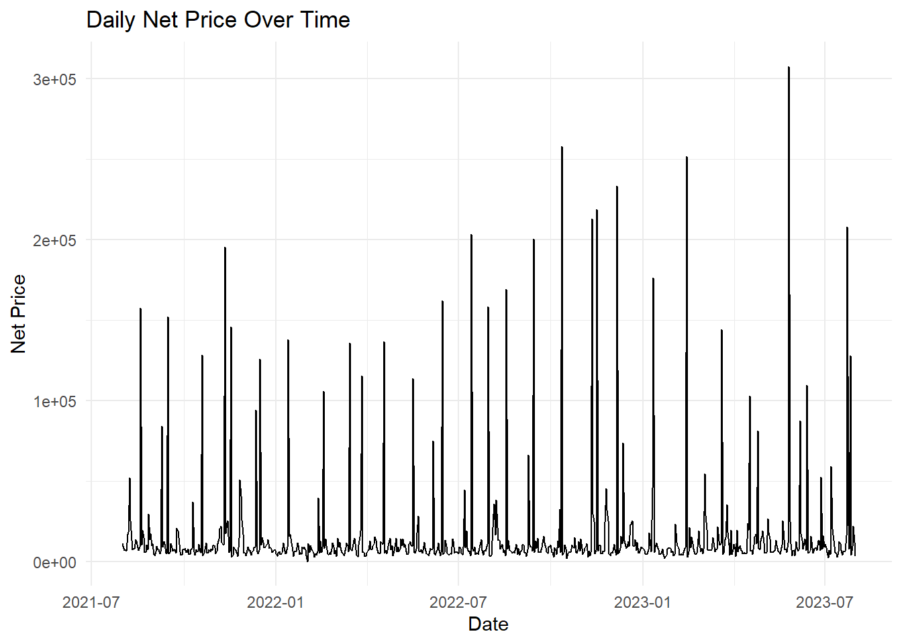
# 绘制按分类的时间序列图ggplot(df_category_daily, aes(x =`Document Date`, y = Net_Price, color =`Category Description`)) +geom_line() +labs(title ="Daily Net Price Over Time by Category",x ="Date", y ="Net Price") +theme_minimal() +theme(legend.position ="bottom")
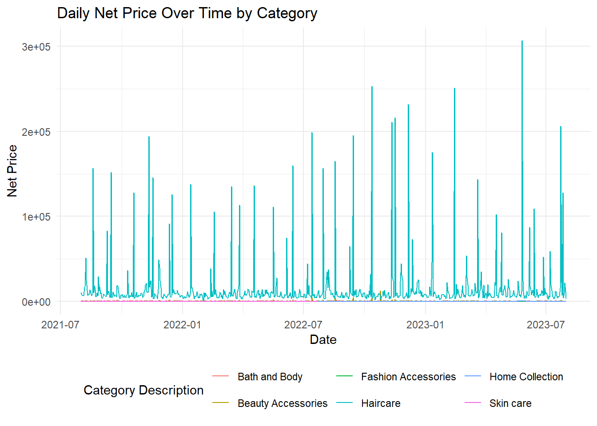
# 绘制按销售渠道的时间序列图ggplot(df_channel_daily, aes(x =`Document Date`, y = Net_Price, color =`Sales Channel`)) +geom_line() +labs(title ="Daily Net Price Over Time by Sales Channel",x ="Date", y ="Net Price") +theme_minimal() +theme(legend.position ="bottom")
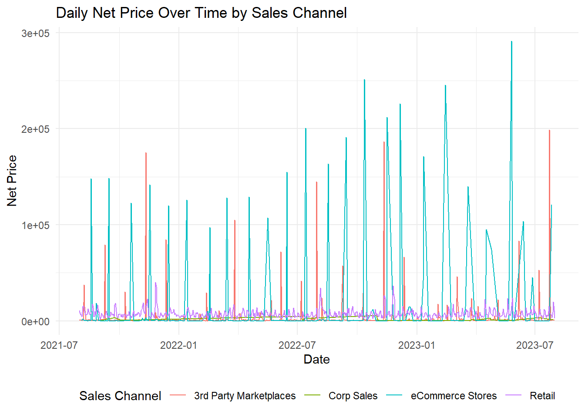
# 按日期聚合销售数量df_qty_daily <- df %>%group_by(`Document Date`) %>%summarise(Quantity =sum(Qty, na.rm =TRUE))# 绘制销售数量时间序列图ggplot(df_qty_daily, aes(x =`Document Date`, y = Quantity)) +geom_line() +labs(title ="Daily Quantity Sold Over Time",x ="Date", y ="Quantity Sold") +theme_minimal()
`summarise()` has grouped output by 'Document Date'. You can override using the
`.groups` argument.
# 绘制按折扣状态的时间序列图ggplot(df_discount_daily, aes(x =`Document Date`, y = Net_Price, color = Discount_Status)) +geom_line() +labs(title ="Daily Net Price Over Time by Discount Status",x ="Date", y ="Net Price") +theme_minimal() +theme(legend.position ="bottom")
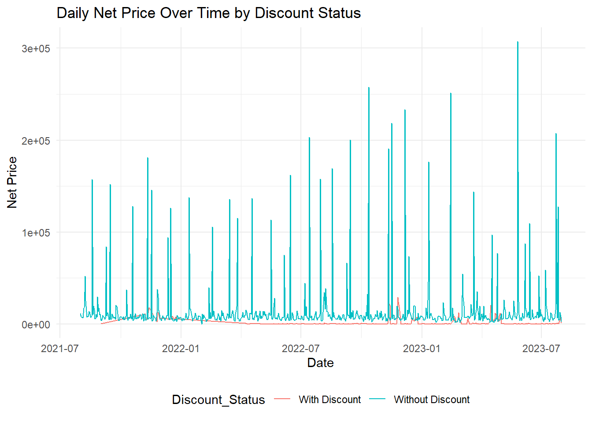
# 季节性分解ts_net_price <-ts(df_daily$Net_Price, frequency =365)decomp <-decompose(ts_net_price)plot(decomp)
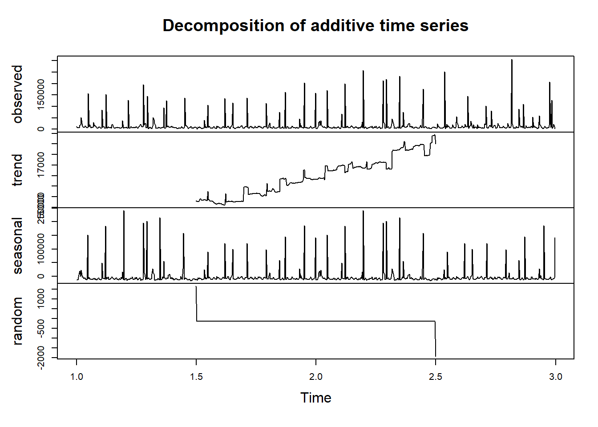
# 按月聚合净价df_monthly <- df_daily %>%mutate(Month =floor_date(`Document Date`, "month")) %>%group_by(Month) %>%summarise(Net_Price =sum(Net_Price, na.rm =TRUE))# 创建时间序列对象，频率设为12（表示每年12个时间点，即按月）ts_net_price_monthly <-ts(df_monthly$Net_Price, start =c(year(min(df_monthly$Month)), month(min(df_monthly$Month))), frequency =12)# ACF图ggAcf(ts_net_price_monthly) +labs(title ="ACF of Net Price (Monthly)",x ="Month", y ="ACF") +scale_x_continuous(breaks =seq(0, 24, 3), labels =function(x) format(seq.Date(from =min(df_monthly$Month), by ="month", length.out =25)[x+1], "%Y-%m"))
Scale for x is already present.
Adding another scale for x, which will replace the existing scale.
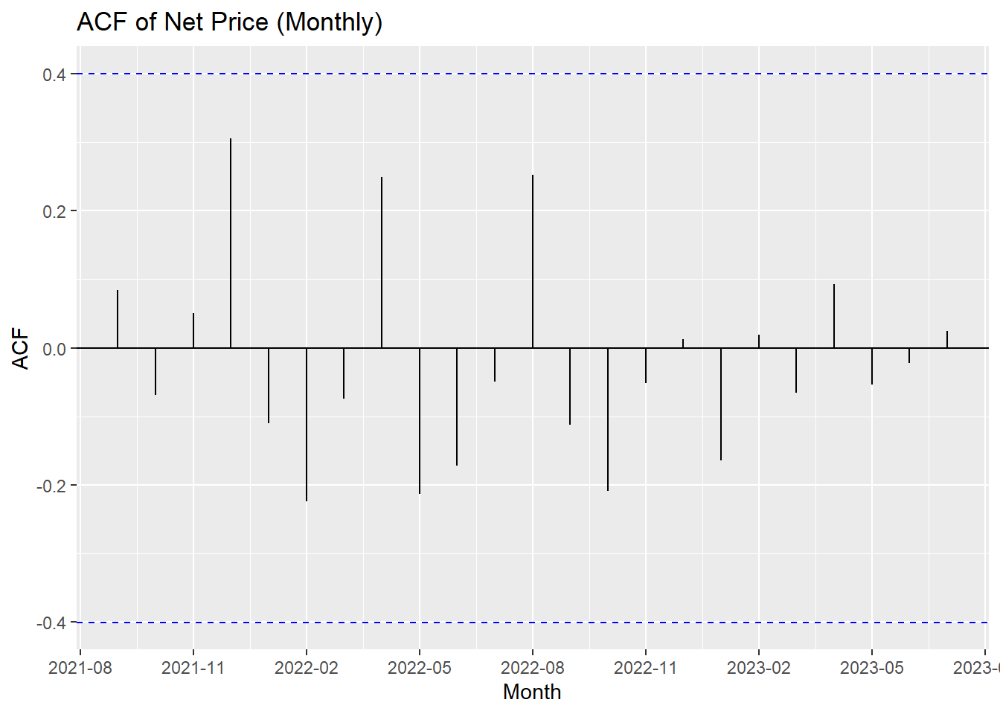
# PACF图ggPacf(ts_net_price_monthly) +labs(title ="PACF of Net Price (Monthly)",x ="Month", y ="PACF") +scale_x_continuous(breaks =seq(0, 24, 3), labels =function(x) format(seq.Date(from =min(df_monthly$Month), by ="month", length.out =25)[x+1], "%Y-%m"))
Scale for x is already present.
Adding another scale for x, which will replace the existing scale.
# Load necessary librarieslibrary(ggplot2)library(dplyr)library(tidyr)# Load the datacleaned_data <-read.csv("D:/cleaned_transactions.csv")# Convert 'Document Date' to Date formatcleaned_data$Document.Date <-as.Date(cleaned_data$Document.Date)# Aggregate datamonthly_data <- cleaned_data %>%mutate(Month =format(Document.Date, "%Y-%m")) %>%group_by(Month, Sales.Channel) %>%summarise(Total.Net.Price =sum(Net.Price, na.rm =TRUE)) %>%spread(Sales.Channel, Total.Net.Price, fill =0)
`summarise()` has grouped output by 'Month'. You can override using the
`.groups` argument.
# Plot total order valuemonthly_data_long <- monthly_data %>%gather(key ="Sales.Channel", value ="Total.Net.Price", -Month)ggplot(monthly_data_long, aes(x = Month, y = Total.Net.Price, fill = Sales.Channel)) +geom_bar(stat ="identity") +theme(axis.text.x =element_text(angle =90, hjust =1)) +labs(title ="Total Order Value by Sales Channel",x ="Month",y ="Total Order Value ($000)")
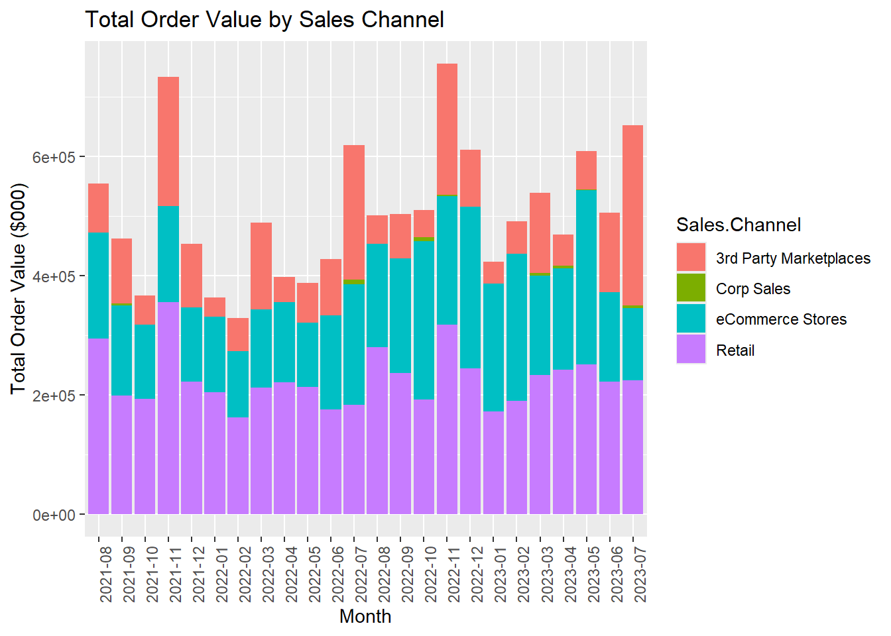
# Plot share of total order valuemonthly_data_long <- monthly_data %>%gather(key ="Sales.Channel", value ="Total.Net.Price", -Month) %>%group_by(Month) %>%mutate(Share = Total.Net.Price /sum(Total.Net.Price))ggplot(monthly_data_long, aes(x = Month, y = Share, fill = Sales.Channel)) +geom_bar(stat ="identity") +theme(axis.text.x =element_text(angle =90, hjust =1)) +labs(title ="Share of Total Order Value by Sales Channel",x ="Month",y ="Share of Total Order Value")
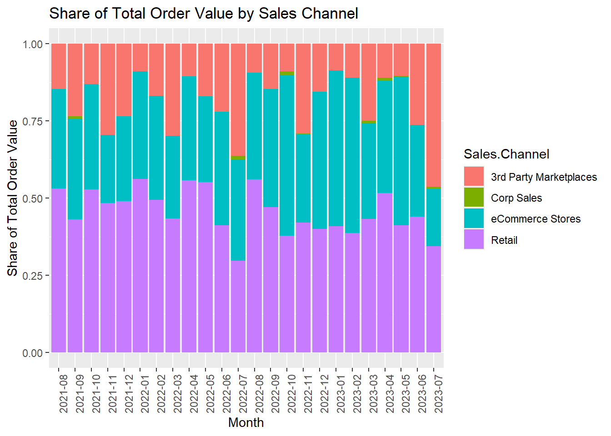
# Load necessary librarieslibrary(ggplot2)library(dplyr)library(tidyr)# Load the datacleaned_data <-read.csv("D:/cleaned_transactions.csv")# Remove rows where Net.Price or Retail.Price is 0cleaned_data <- cleaned_data %>%filter(Net.Price !=0, Retail.Price !=0)# Convert 'Document Date' to Date formatcleaned_data$Document.Date <-as.Date(cleaned_data$Document.Date)# Aggregate datamonthly_data <- cleaned_data %>%mutate(Month =format(Document.Date, "%Y-%m")) %>%group_by(Month, Sales.Channel) %>%summarise(Total.Net.Price =sum(Net.Price, na.rm =TRUE)) %>%spread(Sales.Channel, Total.Net.Price, fill =0)
`summarise()` has grouped output by 'Month'. You can override using the
`.groups` argument.
# Define colors to match the target imagecolors <-c("Retail"="#A8D08D", "eCommerce Stores"="#F4B084","3rd Party Marketplaces"="#9DC3E6", "Corp Sales"="#FFD966","Multi-Channel"="#C6E0B4")# Plot total order valuemonthly_data_long <- monthly_data %>%gather(key ="Sales.Channel", value ="Total.Net.Price", -Month)ggplot(monthly_data_long, aes(x = Month, y = Total.Net.Price, fill = Sales.Channel)) +geom_bar(stat ="identity") +scale_fill_manual(values = colors) +theme(axis.text.x =element_text(angle =90, hjust =1)) +labs(title ="Total Order Value by Sales Channel",x ="Month",y ="Total Order Value ($000)") +scale_y_continuous(labels = scales::comma)
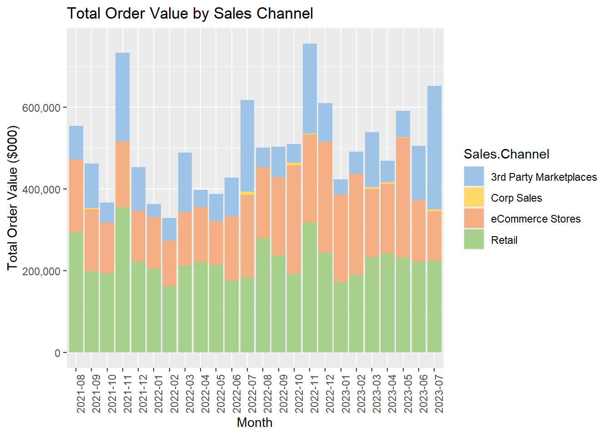
# Plot share of total order valuemonthly_data_long <- monthly_data %>%gather(key ="Sales.Channel", value ="Total.Net.Price", -Month) %>%group_by(Month) %>%mutate(Share = Total.Net.Price /sum(Total.Net.Price))ggplot(monthly_data_long, aes(x = Month, y = Share, fill = Sales.Channel)) +geom_bar(stat ="identity") +scale_fill_manual(values = colors) +theme(axis.text.x =element_text(angle =90, hjust =1)) +labs(title ="Share of Total Order Value by Sales Channel",x ="Month",y ="Share of Total Order Value") +scale_y_continuous(labels = scales::percent)
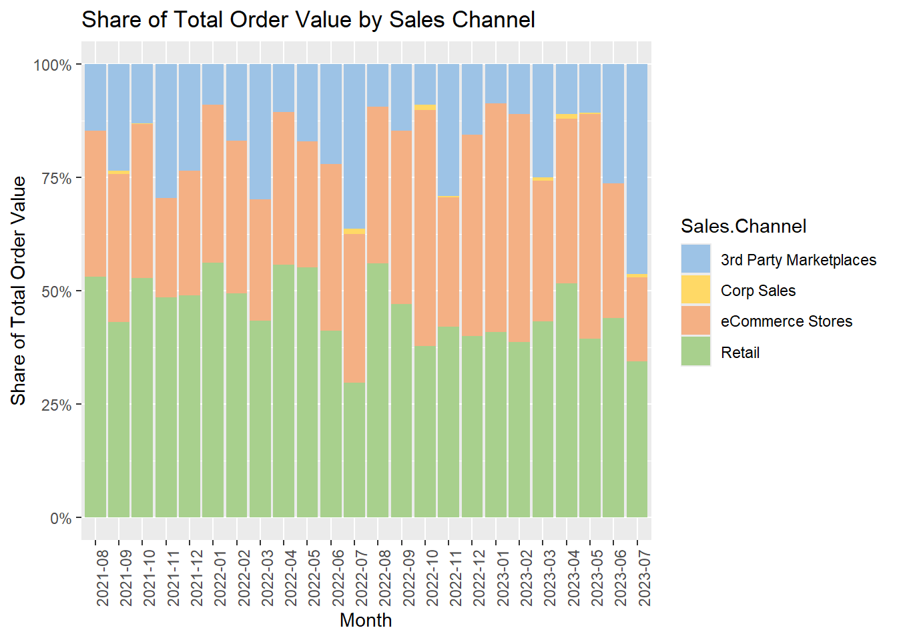
# Load necessary librarieslibrary(ggplot2)library(dplyr)library(tidyr)# Load the datacleaned_data <-read.csv("D:/cleaned_transactions.csv")# Remove rows where Net.Price or Retail.Price is 0cleaned_data <- cleaned_data %>%filter(Net.Price !=0, Retail.Price !=0)# Convert 'Document Date' to Date formatcleaned_data$Document.Date <-as.Date(cleaned_data$Document.Date)# Aggregate datamonthly_data <- cleaned_data %>%mutate(Month =format(Document.Date, "%Y-%m")) %>%group_by(Month, Sales.Channel) %>%summarise(Total.Qty =sum(Qty, na.rm =TRUE),Total.Orders =n_distinct(Order.No),Total.Net.Price =sum(Net.Price, na.rm =TRUE) ) %>%gather(key ="Metric", value ="Value", -Month, -Sales.Channel)
`summarise()` has grouped output by 'Month'. You can override using the
`.groups` argument.
# Define colors to match the target imagecolors <-c("Retail"="#A8D08D", "eCommerce Stores"="#F4B084","3rd Party Marketplaces"="#9DC3E6", "Corp Sales"="#FFD966","Multi-Channel"="#C6E0B4")# Plot Qty of haircare products by Sales Channelggplot(monthly_data %>%filter(Metric =="Total.Qty"), aes(x = Month, y = Value, fill = Sales.Channel)) +geom_bar(stat ="identity", position ="stack") +scale_fill_manual(values = colors) +theme(axis.text.x =element_text(angle =90, hjust =1)) +labs(title ="Qty of haircare products by Sales Channel",x ="Month",y ="Sum of Qty")
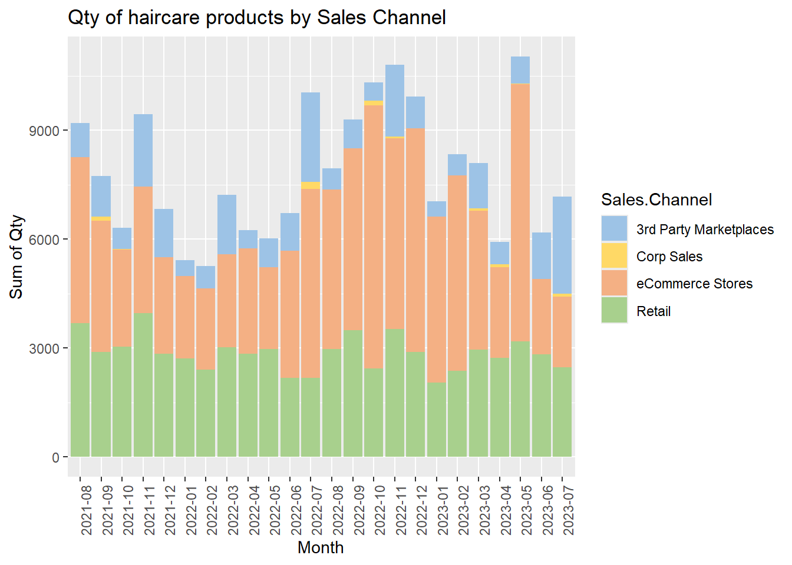
# Plot Order no. of haircare products by Sales Channelggplot(monthly_data %>%filter(Metric =="Total.Orders"), aes(x = Month, y = Value, fill = Sales.Channel)) +geom_bar(stat ="identity", position ="stack") +scale_fill_manual(values = colors) +theme(axis.text.x =element_text(angle =90, hjust =1)) +labs(title ="Order no. of haircare products by Sales Channel",x ="Month",y ="Count of Order No")
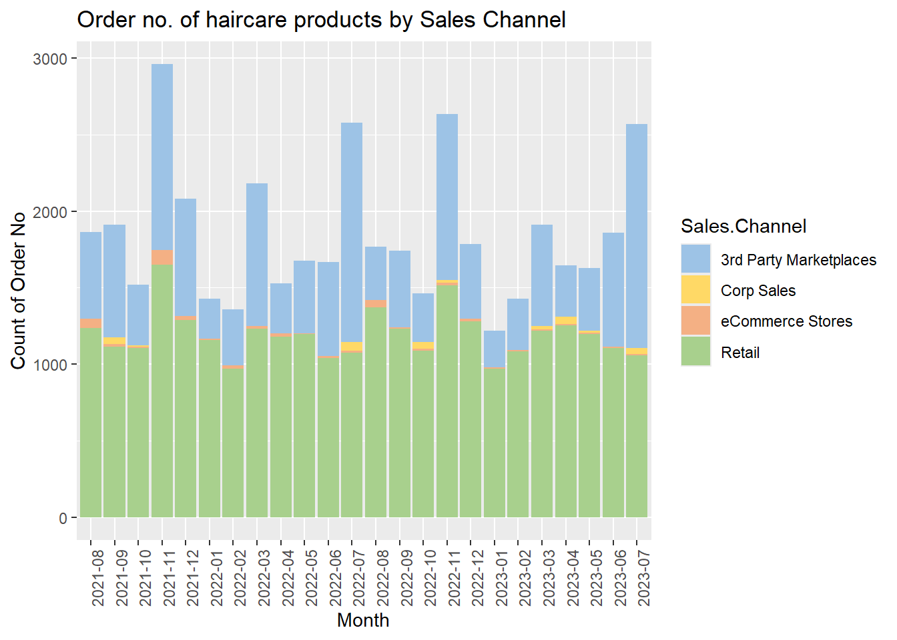
# Plot Revenue of haircare products by Sales Channelggplot(monthly_data %>%filter(Metric =="Total.Net.Price"), aes(x = Month, y = Value, fill = Sales.Channel)) +geom_bar(stat ="identity", position ="stack") +scale_fill_manual(values = colors) +theme(axis.text.x =element_text(angle =90, hjust =1)) +labs(title ="Revenue of haircare products by Sales Channel",x ="Month",y ="Sum of Net Price")